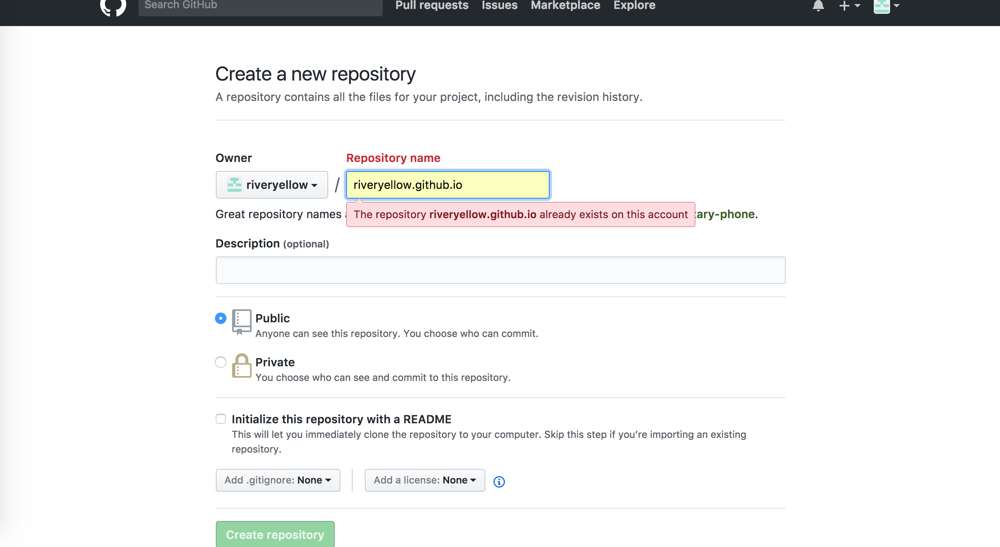
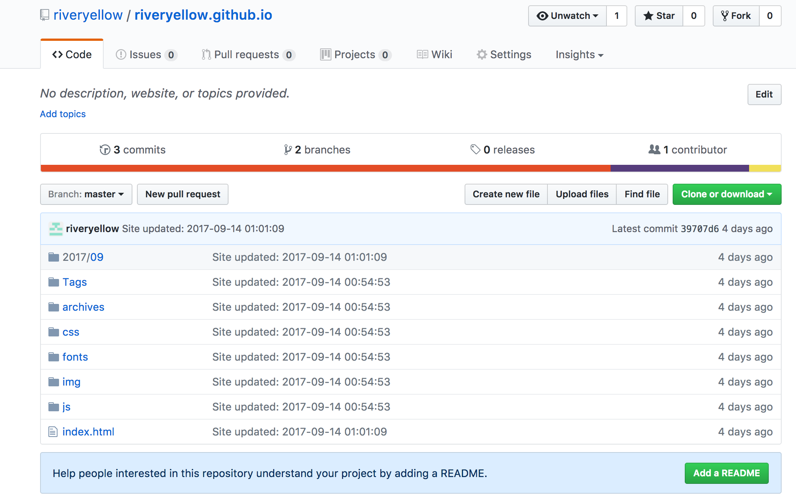

最近寻思着，毕业有一段时间了，是不是应该弄个博客记录一下自己的工作学习点滴，于是本着独立自主不花钱的原则，用hexo + github pages搭了一个简单的个人blog，下面就来说说搭建步骤以及几个踩过的坑。
Hexo
引用官网的话，A fast, simple & powerful blog framework（快速、简单且强大的博客框架）。
Blazing fast — 电光石火般的速度
使用Node.js可以带来让人难以置信的博客生成速度，几百个文件只需要几秒钟方可构建完成。
Markdown Support
One-Command Deployment — 一命令部署
只需一条命令即可将博客部署至Github Pages, Heroku或其他站点上。
Various Plugin
GithubPages
直接从github仓库中获取静态数据，只需要将静态数据编辑好之后提交、推到远程仓库，改变就能生效。
搭建步骤
1. 在Github创建新的仓库
按照gituhub pages上的指导步骤，首先创建一个仓库，以“github的用户名”+github.io 命名仓库（必须这么命名）。

我这已经创建好了的仓库，所以会飘红。
2. 在仓库中创建一个分支
由于github pages在展示的时候，是直接拉取指定分支的静态代码进行展示，所以master分支用于存放生成好的静态代码用于前台展示，新建scaffolds分支用于存放hexo脚手架目录及文件。
3. 搭建hexo环境
首先，通过npm安装hexo依赖： npm install hexo-cli -g
安装好之后再控制台输入： hexo version
若能出现各种版本号，没有报“command not found: hexo”，说明安装成功。
接着，在目标文件夹中初始化Hexo，并使用npm安装所需要的依赖 mkdir <folder>
cd <folder>
hexo init
npm install
初始化成功后，就能看到如下的目录结构：.
├── _config.yml
├── package.json
├── scaffolds
├── source
| ├── _drafts
| └── _posts
└── themes
当前目录下执行： npm install hexo-deployer-git --save
安装hexo的github发布插件，这个插件是必须的，否则执行hexo d之后，会将整个脚手架上传到仓库，进而导致github无法展示博客页面。
插件安装好之后，打开_config.yml，配置几个比较重要的属性，其他的使用默认或根据所选主题来配置就好：deploy:
type: git
repo: http://github.com/riveryellow/riveryellow.github.io.git
branch: master
hexo配置文件的格式，冒号后面一定要跟一个空格才能形成合法键值对。另外，hexo3.0之后，type的值应该是git而不是github，repo是仓库地址（从github页面上copy下来的是带https的，不确定https的协议头能否正常发布）。branch是生成好后的静态代码要部署的分支。
至此，环境算是搭建好了。可以将现有的代码提交到仓库的脚手架分支进行托管。
发表博文到github pages
1. 新建博文
在控制台输入如下命令： hexo new "new post"
执行之后，可以在./source/_post下看到new-post.md（hexo会用横杠补齐空格），打开new-post.md，设置Front-matter(这个真不知道怎么翻译。。)。
Front-matter is a block of YAML or JSON at the beginning of the file that is used to configure settings for your writings. Front-matter is terminated by three dashes when written in YAML or three semicolons when written in JSON.
我选择使用YAML的格式，看起来简洁一些。---
title: 这里可以用中文
date: 2017-09-05 20:57:49 //博文发布时间，不一定是当前时间
cdn: "header-off" //Anisina带的属性
header-img: "./img/markdown.jpeg" //Anisina带的属性
tags: //博文标签
- Markdown
- Hexo
---
大致的配置就是这样了，如果改markdown为标签页，那么需要新增属性：layout: tags，否则layout默认为post（在_config.yml中设置的）。
在front-matter配置好之后，就可以在下方开始用markdown编写博文了。
2. 在博文中插入本地图片
如果想在博文中插入自己的图片，有两种方式：一种是将图片放入专门的服务器，通过图片链接插入图片，另外一种是将图片放到本地，通过相对路径进行访问。本着免费至上的原则，我选择了第二种。
首先，在 ./source/_post/ 下新建目录，名字要和引用图片的博文名字相同，如new-post.md，那么新建的目录名称就叫new-post。然后在改目录下新建img目录，用于存放图片。引用时，在.md文件中写入：
即可引入。
3. 生成html静态代码
通过hexo命令生成静态的html代码后，方可通过浏览器进行访问。 hexo g
或
hexo generate
命令执行后，可以看到根目录下多了一个public目录，里面放的就是生成好的html静态代码。部署后，也是将public文件中的东西部署到master分支上去。
4. 部署静态html代码
若要在本地查看效果： hexo s
或
hexo server
通过访问localhost:4000即可查看效果。
若要部署到github： hexo d
或
hexo deploy
若部署成功，几分钟后，通过访问当初创建的仓库名就能看到效果，仓库的对应分支也能查看到提交记录。

踩过的坑
1. WARN:NO LAYOUT
将本地存放的脚手架目录全部删除，重新从仓库拉取脚手架，在执行 hexo g 后，发现命令行提示，好几个html前面出现了“WARN:NO LAYOUT”的字样，hexo s之后，页面一片空白。
百度一番，说是主题文件出了问题。进入./themes下，果然是少了主题文件。
tips:clone到本地的主题不能直接提交到自己的仓库
2. 部署到github失败，master分支上是整个脚手架的代码
重新拉去脚手架代码之后进行部署，本地正常访问，但是部署到github后，github.io地址无法访问（404），发布结果邮件报莫名其妙的错误，master分支上是整个脚手架的代码。
折腾了好久，才发现是缺少hexo部署到github的插件hexo-deploy-git。
重新拉去脚手架代码，一定要在根路径下安装hexo的部署插件！
3. 部署到github后，tags标签页无法访问
本地访问localhost:4000没问题，查看远程仓库master分支，发现tags的路径编程了大写的Tags，气到要晕厥。百度了一番，应该是git配置里面忽略了大小写的缘故。
进入脚手架根目录的.git，编辑config文件，将”ignorecase = true”改为false，将主分支上的全部清空，重新部署即可。
参考：https://hexo.io/
https://pages.github.com/